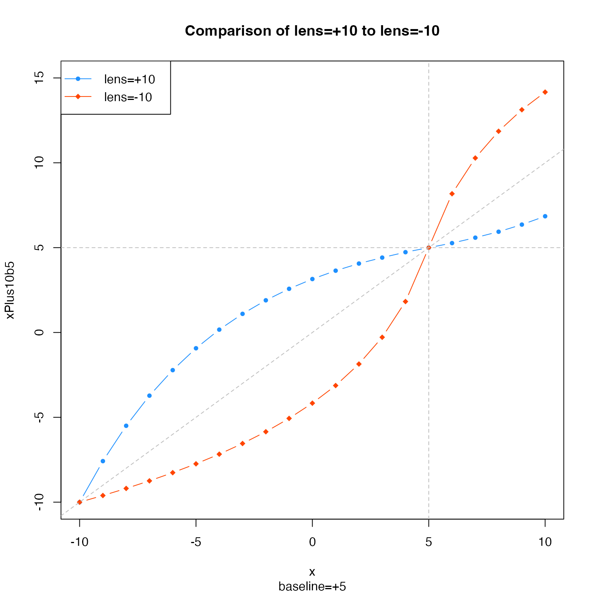
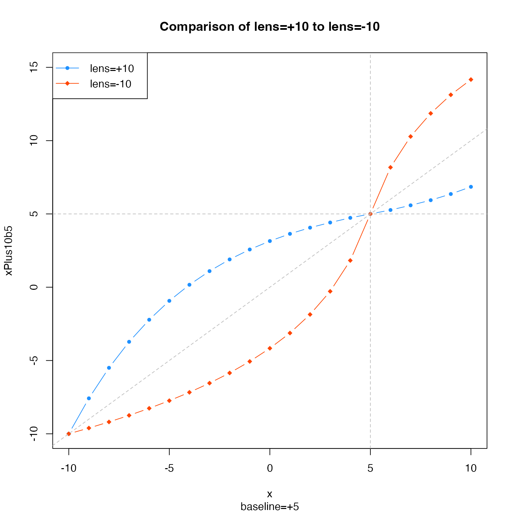

Warp a vector of numeric values relative to zero
Arguments
- x
numericvector- lens
numericvalue which defines the lens factor, wherelens > 0will compress values near zero, andlens < 0will expand values near zero and compress values near the maximum value. Iflens == 0the numeric values are not changed.- baseline
numericvalue describing the baseline, for example when the central value is non-zero. The baseline is subtracted fromx, the warp is applied, then the baseline is added to the result.- xCeiling
numericmaximum value used for the color warp range, useful for consistency. WhenxCeilingis not supplied, the maximum difference frombaselineis used. WhenxCeilingis defined, andbaselineis non-zero, the effective value used is(xCeiling - baseline).- ...
additional arguments are ignored.
Details
This function warps numeric values using a log curve transformation, such that values are either more compressed near zero, or more compressed near the maximum values. For example, a vector of integers from -10 to 10 would be warped so the intervals near zero were smaller than 1, and intervals farthest from zero are greater than 1.
The main driver for this function was the desire to compress divergent color scales used in heatmaps, in order to enhance smaller magnitude numeric values. Existing color ramps map the color gradient in a linear manner relative to the numeric range, which can cause extreme values to dominate the color scale. Further, a linear application of colors is not always appropriate.
See also
Other jam numeric functions:
deg2rad(),
noiseFloor(),
normScale(),
rad2deg(),
rowGroupMeans(),
rowRmMadOutliers()
Examples
x <- c(-10:10);
xPlus10 <- warpAroundZero(x, lens=10);
xMinus10 <- warpAroundZero(x, lens=-10);
plot(x=x, y=xPlus10, type="b", pch=20, col="dodgerblue",
main="Comparison of lens=+10 to lens=-10");
graphics::points(x=x, y=xMinus10, type="b", pch=18, col="orangered");
graphics::abline(h=0, v=0, col="grey", lty="dashed", a=0, b=1);
graphics::legend("topleft",
legend=c("lens=+10", "lens=-10"),
col=c("dodgerblue","orangered"),
pch=c(20,18),
lty="solid",
bg="white");
 # example showing the effect of a baseline=5
xPlus10b5 <- warpAroundZero(x, lens=10, baseline=5);
xMinus10b5 <- warpAroundZero(x, lens=-10, baseline=5);
plot(x=x, y=xPlus10b5, type="b", pch=20, col="dodgerblue",
main="Comparison of lens=+10 to lens=-10",
ylim=c(-10,15),
sub="baseline=+5");
graphics::points(x=x, y=xMinus10b5, type="b", pch=18, col="orangered");
graphics::abline(h=5, v=5, col="grey", lty="dashed", a=0, b=1);
graphics::legend("topleft",
legend=c("lens=+10", "lens=-10"),
col=c("dodgerblue","orangered"),
pch=c(20,18),
lty="solid",
bg="white");

# example showing the effect of a baseline=5
xPlus10b5 <- warpAroundZero(x, lens=10, baseline=5);
xMinus10b5 <- warpAroundZero(x, lens=-10, baseline=5);
plot(x=x, y=xPlus10b5, type="b", pch=20, col="dodgerblue",
main="Comparison of lens=+10 to lens=-10",
ylim=c(-10,15),
sub="baseline=+5");
graphics::points(x=x, y=xMinus10b5, type="b", pch=18, col="orangered");
graphics::abline(h=5, v=5, col="grey", lty="dashed", a=0, b=1);
graphics::legend("topleft",
legend=c("lens=+10", "lens=-10"),
col=c("dodgerblue","orangered"),
pch=c(20,18),
lty="solid",
bg="white");
